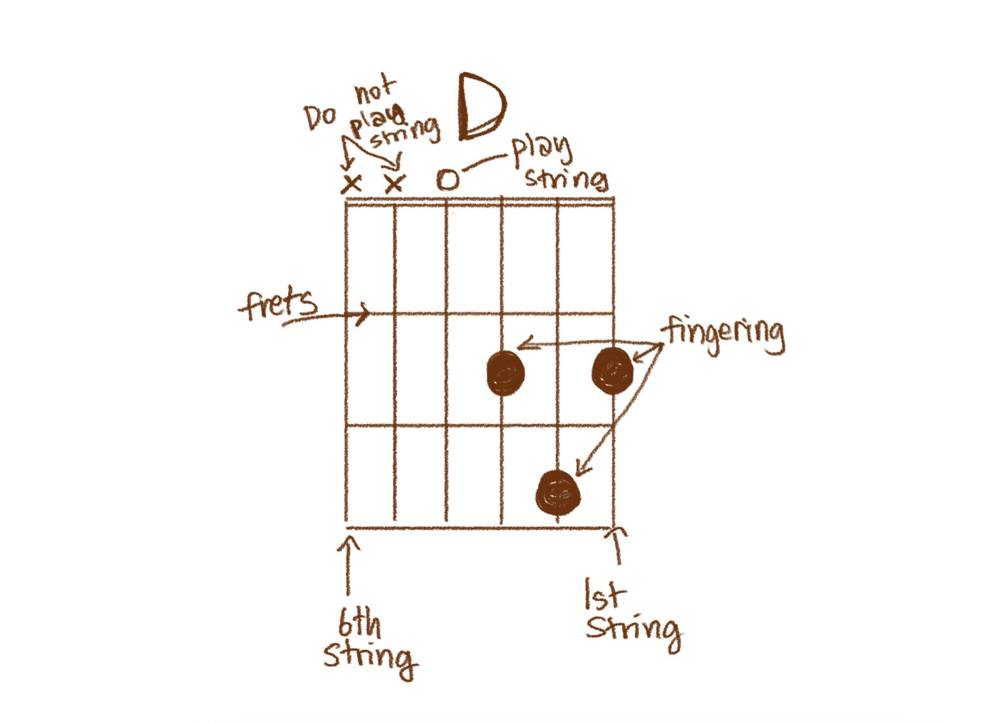

Chords are one of the fundamental, most important things to learn when learning gutiar for the first time. Chords are groups of notes played together, sometimes becoming the base of the song. Due to the guitar's distinct 6-string feature (normally 6 strings, it can be more or less), chords are easier to play than any other instrument as all 6 strings can be strummed at the same time to play a chord.
Chord charts are a visual and symbolic tool frequently used between guitarists.
These chord charts are simple pictures, symbolising a visual map of
the fretboard and 6 strings, where the most left string is the 6th string (thickest), and
the most right string is the 1st string (the thinnest string).
On chord charts and on the diagram, there are dots at specific places, and the chord name
above the chart. The dots signify where you should put your fingers/ which strings and which
frets you should press, to strum and play that chord. Sometimes above the diagram of the fretboard,
there is an X or O above specific strings. An X above a specific string means to not strum that
string when playing the chord, and the O, signifies that you are allowed to play that string
when playing the note. When there is no O nor X, this means you should be playing it either way.

A D chord in this instance, means that you need to press the 1st string, 2nd fret,
2nd string, 3rd fret, and the 3rd string, 2nd fret. The O above the 4th string indicates
that you should play it in the chord even though you don't press it, and the 5th and 6th string
signed with a X means that you should not play them in this chord. If you strum the overall
chord from the 4th string and down, success! You have played the D chord ☻
There are many other chords, and some chords even go out of the range of the first, second, and
third fret! This is usually indicated with words on the side, saying the space that seems like the
first fret is actually the third fret and the fretboard visually is shifted up, but just cut off the same
length.
Back to top of page